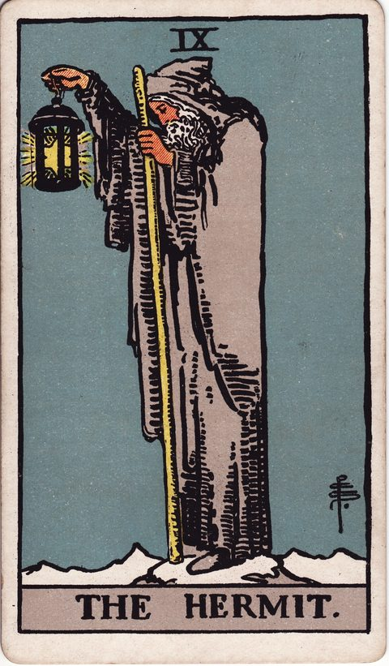
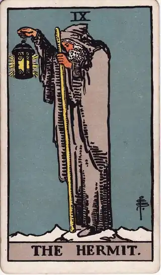

READING
決断の理由を1行メモするだけで、迷いが減る理由
・ DECIDE. 編集部

「あのとき、別の道を選んでいればよかった」。結果が思い通りにいかなかったとき、人は過去の自分の選択を責め始めます。時間をかけて真剣に選んだはずなのに、なぜあんな決断をしたのかと、自分で自分を問い詰めてしまう。そんな後悔のループに、心当たりはありませんか。
先に言っておくと、後悔の原因は、決断そのものが間違っていたからではありません。原因は、「なぜその道を選んだのか」という当時の理由を、きれいに忘れてしまっていることです。この記事のゴールは、その理由を未来の自分に届ける、たった1行の習慣を知ることです。
POINT 01 後悔の正体は「理由を忘れたこと」
決断した瞬間の自分は、限られた情報の中で、それなりに精一杯考えています。ところが月日が経つと、当時の状況も、抱えていた迷いも、何を重視したのかも、記憶から薄れていきます。残るのは「結果」だけです。
すると、人の頭は不公平な判定を始めます。結果が悪かったというだけで、当時の判断まで悪かったことにしてしまう「結果バイアス」。そして、後から振り返ると「最初から予測できたはずだ」と錯覚する「後知恵バイアス」。この二つが重なると、当時の自分は、知り得なかった未来の責任まで負わされることになります。
防ぎ方はシンプルです。決断した瞬間に、そのときの理由を1行だけ書き残すこと。「私は◯◯を選ぶ。なぜなら〜」。たったこれだけの記録が、当時の自分の思考を正確に保存してくれます。結果が悪くても、「あの前提のもとでは、この選択が最善だった」と、過去の自分を責めずに済むようになります。後悔との向き合い方そのものについては、後悔しない選び方でも整理しています。
この1行は、過去の自分を守るためだけのものではありません。次に迷ったときの自分への、具体的な助言でもあります。「前回はこういう理由で選んで、結果はこうだった」。その往復が残っているかいないかで、次の決断の速さと確かさは大きく変わります。
POINT 02 カードの視点で見る

隠者は、ランタンを手に一人立つ賢者の姿です。外の声ではなく、内側の光で足元を照らすことを表します。決断の理由を書き残す行為は、まさにこのランタンです。未来の自分が暗闇で迷ったとき、「あのときの自分は、こう考えて選んだ」という一行が、静かに足元を照らしてくれます。記録とは、未来の自分への手紙でもあります。
ペンタクルの3は、職人たちが協力して建物を造り上げる姿で、「積み重ね」と「技術の習熟」を表します。1行メモも同じです。1件の記録はささやかでも、10件、30件と積み重なれば、それは「自分の判断の設計図」になります。職人が作業の記録から腕を上げるように、決断も記録の積み重ねで精度が上がっていきます。
魔術師は、テーブルの上に道具を並べ、意のままに操る姿です。手元の材料を自在に使って、望む形を生み出す力を表します。過去の決断ログは、まさにこの「手元の道具」です。似た迷いにぶつかったとき、過去の自分の判断材料が揃っていれば、ゼロから悩み直す必要がなくなります。記録は、未来の決断のための道具箱なのです。
POINT 03 1行の理由が、時間をかけて効いてくる
1行メモの本当の力は、書いた瞬間ではなく、溜まったときに現れます。
まず、数件の記録が並ぶと、自分の「判断の癖」が見えてきます。「疲れているときは、いつも現状維持を選んでいる」「人間関係の迷いでは、相手の顔色を優先して後悔している」。癖は、頭の中にいるうちは見えません。文字として並べて初めて、客観的に眺められるようになります。
次に、癖が見えると、次の決断が変わります。「また疲れた状態で決めようとしている」と気づけるだけで、一晩置く、相談するといった対処が選べます。そして振り返りのときに、結果と理由を並べて検証できるため、「あの判断は正しかった」「あの前提が崩れていた」と、感情ではなく材料で学べます。決断は、才能や性格ではなく、記録と検証で伸びるスキルです。
だからこそ、カードを引いて終わりにしないことが大切です。カードの視点で本音と向き合い、決めて、理由を1行残す。この流れが習慣になると、決断ログは「自分はどういう人間で、何を大切にして生きてきたか」の記録そのものになります。迷うたびに参照できる自分専用の資料がある状態は、次の迷いの時間を確実に短くしてくれます。
書き方のコツは、とにかく短くすることです。立派な文章は要りません。「残業続きで体が限界だから、休むほうを選ぶ」「値段より、長く使える感覚を優先した」。結果の予想や言い訳を並べるのではなく、「何を一番重く見て決めたか」だけを残します。気持ちを一言添えても構いません。「不安だけど、挑戦するほうを選ぶ」。その一言が、後から読み返したときに、当時の自分の温度まで正確に思い出させてくれます。1行だからこそ、面倒にならずに続き、続くからこそ、時間をかけて効いてくるのです。
POINT 04 自分への問いかけ
最後に、自分に問いかけてみてください。最近後悔した決断について、あのときの自分が何を考えていたか、正確に思い出せるか。決めた理由を1行で書くなら、今日の決断には何と書くか。記録が30件溜まったら、自分のどんな癖が見えてきそうか。そして、その癖を知った自分は、次にどう決めたいか。
大げさな日記は要りません。決めた理由を、1行だけ。今日の小さな決断から、その1行を残してみてください。数ヶ月後の自分が、その記録に何度も救われるはずです。